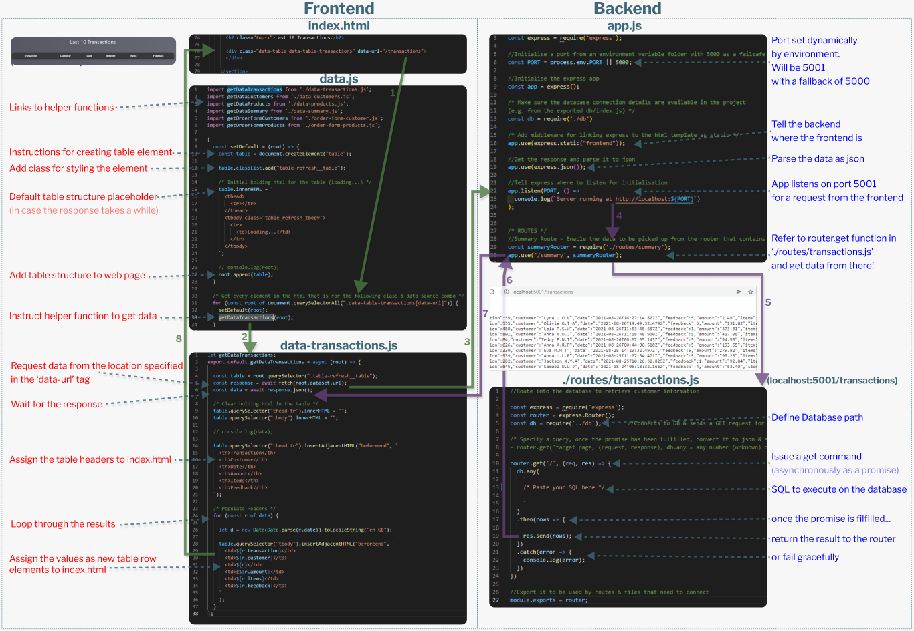

Routers and routes
As mentioned, the frontend app makes a request to a backend data store which issues a response to display
Routers = A pattern where the backend provides perscribed routes to the data that the frontend can call
Routes = A URL that the backend returns a result to and the frontend can use to populate the application
Request / Response Path
- The HTML element has a data-url tag with the name of the route's URL page
- The frontend coordinator (data.js) instructs each helper function to get the data from the backend
- An asynchronous request is made for the data from the backend
- The router's coordinator on the backend (app.js)
- Connects to the database
- Decides on the format of the output
- Waits for the frontend to make a request for data
- Calls the route requested by the frontend when a request is made
- The route file gets the data with a SQL script
- And sends it back to app.js
- app.js passes the result back to the frontend helper function
- The data is iteratively populated into the HTML element. Once done, it will appear on the web page
